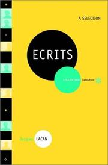

Écrits: The First Complete Edition in English
Book·Jacques Lacan, 1966·文集

A collection of Lacan's essays, including "The Mirror Stage" and "The Freudian Thing," known for their difficult style.
- Author
- Jacques Lacan
- Year
- 1966
- Difficulty
- Advanced
- Kind
- Primary text
- Schools
- Lacanian Psychoanalysis
- Core theories
- Mirror Stage
Editions
- English edition Écrits: The First Complete Edition in English Jacques Lacan (trans. Bruce Fink) · W. W. Norton · 2006 Open Library ↗